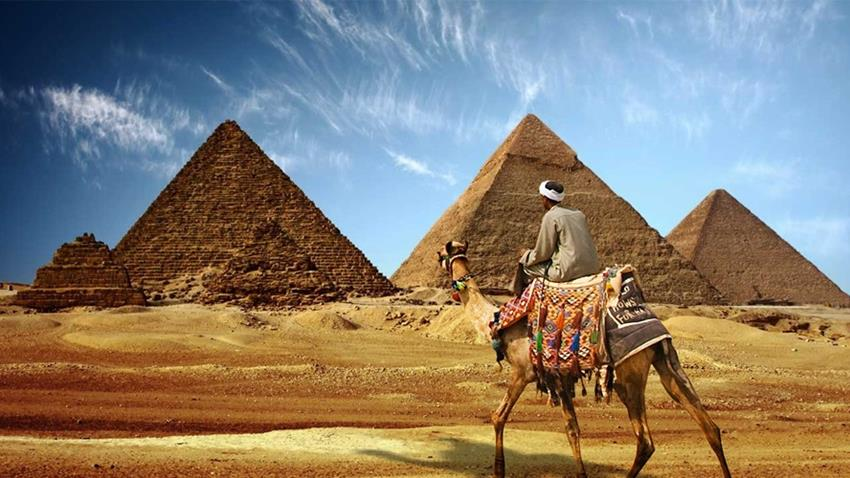

misr travels
this is our places for our clients this week we hope to be good for you
| Egypt cultural and heritage tourism remain special, some of the impressive cultural tourist attractions in Egypt are the Pyramids of Giza, which are among the seven wonders of the ancient world. It includes the Great Sphinx, Luxor Temple, etc. |  | Egypt cultural and heritage tourism remain special, some of the impressive cultural tourist attractions in Egypt are the Pyramids of Giza, which are among the seven wonders of the ancient world. It includes the Great Sphinx, Luxor Temple, etc. | |
| Egypt cultural and heritage tourism remain special, some of the impressive cultural tourist attractions in Egypt are the Pyramids of Giza, which are among the seven wonders of the ancient world. It includes the Great Sphinx, Luxor Temple, etc. | Egypt cultural and heritage tourism remain special, some of the impressive cultural tourist attractions in Egypt are the Pyramids of Giza, which are among the seven wonders of the ancient world. It includes the Great Sphinx, Luxor Temple, etc. | ||
| Egypt cultural and heritage tourism remain special, some of the impressive cultural tourist attractions in Egypt are the Pyramids of Giza, which are among the seven wonders of the ancient world. It includes the Great Sphinx, Luxor Temple, etc. | Egypt cultural and heritage tourism remain special, some of the impressive cultural tourist attractions in Egypt are the Pyramids of Giza, which are among the seven wonders of the ancient world. It includes the Great Sphinx, Luxor Temple, etc. |